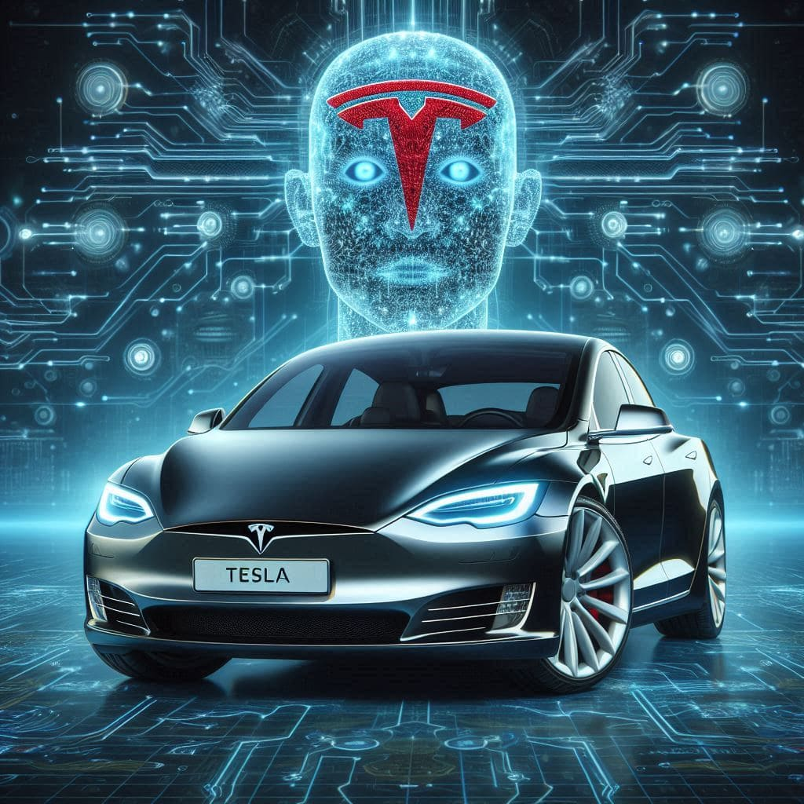

Cars have been one of the most influential inventions in modern history. From the earliest models powered by steam to today’s advanced electric vehicles, cars have shaped the way people travel, work, and live. This page highlights the evolution of cars, explores their different categories, and compares traditional gasoline-powered vehicles with modern electric cars. Automobiles are more than just machines; they are symbols of innovation, style, and freedom. © 2025 Car Enthusiast Page.
The first practical automobiles were developed in the late 19th century. Karl Benz is often credited with creating the first true car in 1886. Since then, the industry has seen remarkable growth, with famous brands like Ford introducing mass production and making cars affordable to everyday people. Over time, cars evolved from simple transportation tools into highly complex machines equipped with computers, sensors, and cutting-edge designs.
| Feature | Electric Cars | Gasoline Cars |
|---|---|---|
| Fuel Source | Battery & Electricity | Petrol/Diesel |
| Environmental Impact | Low Emissions | High Emissions |
| Maintenance | Lower (fewer moving parts) | Higher (engine parts wear out) |
| Performance | Instant Torque, Quiet Ride | Loud Engine, Slower Acceleration |
Below is an image of an electric car, representing the future of transportation. Cars are now designed with both performance and sustainability in mind.
Here are some useful resources for car enthusiasts:
For any questions, reach me at Mohith_sai@uml.edu.